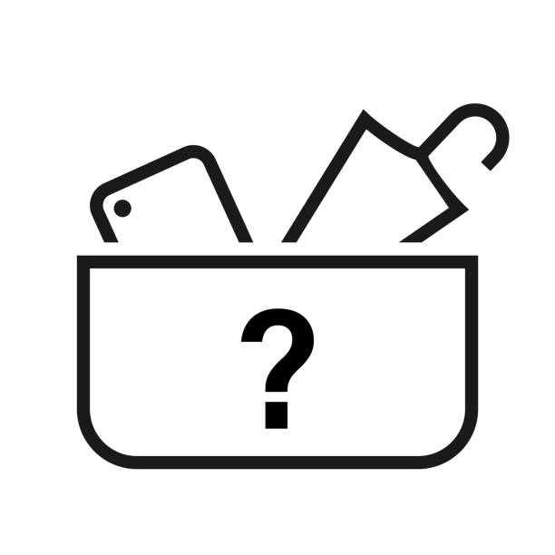
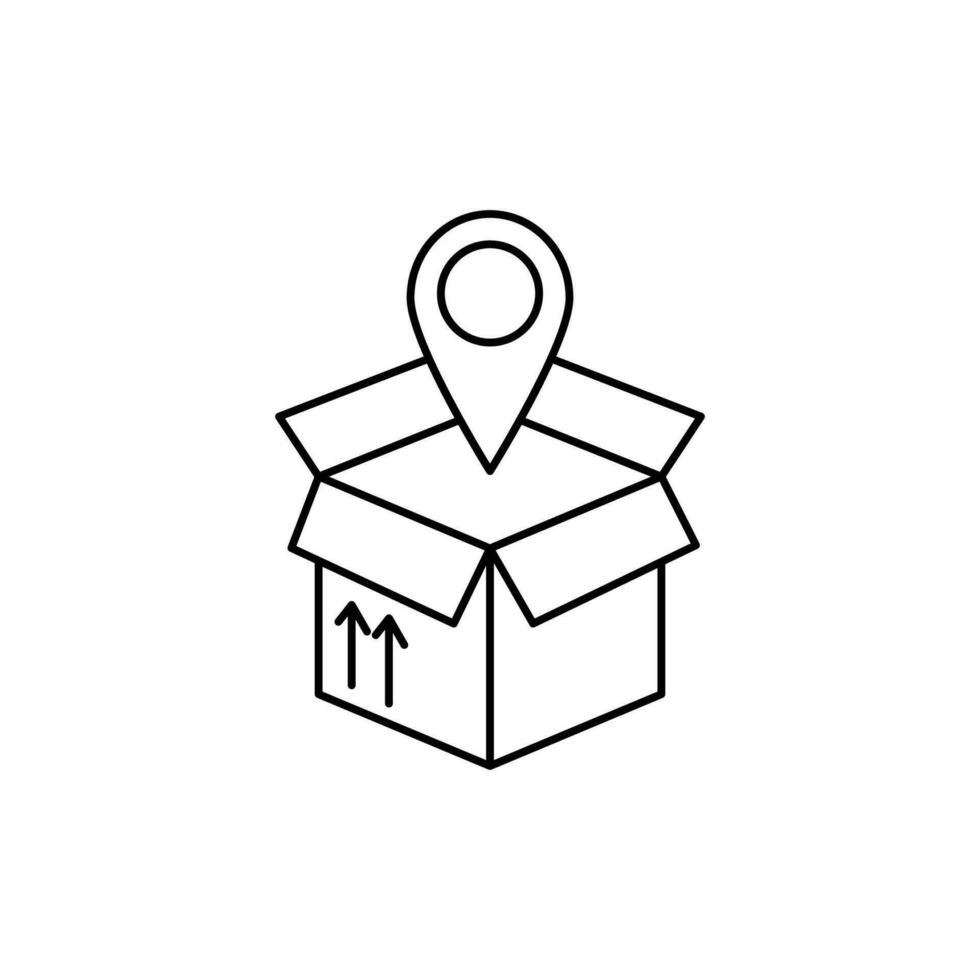

Features

Report lost items quickly and easily, with detailed descriptions and optional images.
Easy Reporting

Find lost items by searching specific keywords and filtering by category.
Quick Search